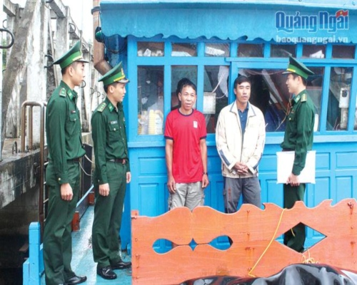

Trang chủ > Chuyên mục > Kinh tế > Nỗ lực ngăn chặn tàu cá khai thác hải sản trái phép

Nỗ lực ngăn chặn tàu cá khai thác hải sản trái phép
(Báo Quảng Ngãi)- Năm 2016 và nửa đầu năm 2017, tình hình tàu cá ở tỉnh ta ra vùng biển nước ngoài khai thác hải sản trái phép có chiều hướng gia tăng. Số lượng phương tiện, ngư dân bị nước ngoài bắt, xử lý tăng đột biến. Đây là một trong những nguyên nhân khiến ngành hải sản phải nhận thẻ vàng của Ủy ban Châu Âu, vì nạn khai thác bất hợp pháp.
Để xóa thẻ vàng và giữ lại thẻ xanh cho hải sản Việt Nam, Bộ đội Biên phòng (BĐBP) tỉnh đã nỗ lực triển khai nhiều biện pháp, nhằm ngăn chặn tình trạng đánh bắt hải sản trái phép, hướng dẫn ngư dân khai thác hải sản đúng pháp luật. Theo thống kê của BĐBP tỉnh, trong 6 tháng đầu năm 2017, toàn tỉnh có 16 tàu/237 ngư dân vi phạm vùng biển nước ngoài, khai thác hải sản trái phép.
Cán bộ Đồn Biên phòng Bình Hải (Bình Sơn) vận động ngư dân không xâm phạm vùng biển nước ngoài để khai thác hải sản. Ảnh: K.TOÀN
Để giảm thiểu và tiến tới chấm dứt tình trạng ngư dân vi phạm vùng biển nước ngoài, BĐBP tỉnh đã tham mưu cho UBND tỉnh, Bộ Tư lệnh BĐBP tổ chức nhiều cuộc họp rút kinh nghiệm, bàn giải pháp ngăn chặn tàu cá vi phạm vùng biển các nước. Cụ thể là, xác minh làm rõ động cơ, mục đích đối với những phương tiện dự trữ nhiên liệu, lương thực, thực phẩm một cách bất thường. Kiên quyết không xuất bến và có biện pháp ngăn chặn ngay từ trong bờ đối với tàu cá có dấu hiệu vi phạm...
Từ những giải pháp cụ thể, cộng với sự quyết tâm đồng hành cùng ngư dân làm ăn phù hợp với luật pháp quốc tế, Bộ Chỉ huy BĐBP tỉnh chỉ đạo cho các đồn, trạm biên phòng tăng cường tuần tra, kiểm tra, kiểm soát đối với tàu cá khai thác hải sản xa bờ trước khi xuất bến đi hành nghề.
Phó Chỉ huy trưởng, Tham mưu trưởng BĐBP tỉnh, đại tá Đoàn Thanh Long, cho biết: Chúng tôi đã chỉ đạo các đơn vị chủ động tiến hành công tác điều tra cơ bản, nắm tình hình và quản lý chặt chẽ ngay từ trên bờ. Khi phát hiện chủ phương tiện, thuyền trưởng có dấu hiệu đưa tàu cá và ngư dân đi đánh bắt hải sản ở vùng biển nước ngoài trái phép thì gặp gỡ tuyên truyền, đồng thời cũng có biện pháp cụ thể để ngăn chặn. BĐBP tỉnh cũng đã quyết liệt, cứng rắn trong xử lý, như tước giấy phép hoạt động nghề cá, chứng chỉ thuyền trưởng, máy trưởng; đồng thời xử phạt bằng tiền... đối với các tàu cố tình vi phạm, vi phạm nhiều lần.
Ngoài những giải pháp hành chính, các đồn biên phòng phụ trách địa bàn có ngư dân vi phạm như Lý Sơn, Bình Hải, Sa Kỳ... còn đẩy mạnh công tác tuyên truyền, phổ biến giáo dục pháp luật cho ngư dân, vận động ngư dân không tham gia cùng thuyền trưởng, chủ tàu ra nước ngoài khai thác hải sản trái phép.
Chính trị viên phó Đồn Biên phòng Bình Hải, đại úy Trương Ngọc Khương, cho biết: Thời gian qua, chúng tôi tổ chức nhiều hình thức để tuyên truyền cho ngư dân. Tăng cường cán bộ, chiến sĩ xuống từng tàu, thuyền; trực tiếp đến gia đình thăm hỏi động viên tuyên truyền để bà con nắm được quy định của pháp luật và hiểu được những việc làm của mình để khỏi ảnh hưởng đến quyền lợi của nhiều người khác, làm xấu hình ảnh ngư dân Việt Nam đối với các nước trên thế giới...
Qua theo dõi, trong thời gian nửa cuối năm 2017, trên địa bàn tỉnh chỉ xảy ra 2 tàu cá vi phạm, giảm 14 tàu so với 6 tháng đầu năm. Đây là một tín hiệu đáng mừng để bà con ngư dân ổn định sản xuất, làm ăn một cách chân chính trên các ngư trường truyền thống trong nước và bảo vệ thương hiệu thủy sản Việt Nam.
Phó Chỉ huy trưởng, Tham mưu trưởng BĐBP tỉnh, đại tá ĐOÀN THANH LONG


Từ khoá: quảng ngãi , cán bộ , biển , bình sơn , UBND tỉnh , việt nam , giáo dục , lý sơn , thăm , ngư dân , vàng , chiến sĩ , thế giới , bộ đội , hải sản , tàu cá , châu âu , Đoàn .